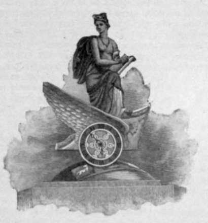

Social Events
Description
This section is from the book "The National Capitol. Its Architecture Art And History", by George C. Hazelton, Jr. Also available from Amazon: The National Capitol Its Architecture Art and History.
Social Events
On three occasions the National Capitol has been devoted to social events, though the purpose in each instance was to raise money for charitable or other meritorious objects. The first of these was the Centennial Tea Celebration, or " Centennial Tea Party" as it was more popularly called, held on the evenings of the 16th and 17th of December, 1874. Its purpose, like many similar ones held throughout the country about that time, was to awaken interest in the coming Centennial Exhibition in Philadelphia in 1876, and to raise funds for some of the proposed exhibits. The rotunda was the principal scene of the fete, though the old Hall of Representatives also was open to visitors, where, in a dim, religious light, the Marine Band discoursed its sweetest melodies. This old hall became more ghostly than usual under the spell of the magician's wand—directing his marvelous musicians, each with a stand and score lighted by a single flickering candle, even before the mute assembly of statues of the dead.
The rotunda was artistically decorated with flags j and the thirteen tables, representative of the thirteen original States, were presided over by nineteenth-century dames, glorying in eighteenth-century flounces, powdered hair and patches. The Maryland table was conspicuous for Revolutionary relics, notably the gilt candelabras, loaned by a niece of Mrs. General Hunter, which had been in the family over one hundred years. Among other objects of interest was a bell whose tongue had proclaimed liberty to the people in 1776. Over the door leading from the rotunda to Statuary Hall was a miniature ship, representing the Dartmouth, commemorative of the event which had given the gathering its name. Two boys, dressed in Mohawk costume, stood ready to throw the proverbial tea into Boston harbor. The presence of a band of Navajo Indians, with General Ardy, attracted as much interest from the throng as they themselves took in the " Indian boys " presiding over the destiny of the taxed cargo. These boys, the old chiefs promptly pronounced good Navajos.
From a rostrum which had been prepared, General Hawley, and afterwards Secretary Robeson, addressed the throng. Some disappointment was felt by the curious that King Kalakaua, then in the city, sent his regrets. His suite were present, however, occupying places upon the rostrum during the addresses, where they attracted their share of attention. The affair was a brilliant one, and much credit was due to the ladies who arranged and conducted it.
The Garfield Tea Party, which may be described as a fashionable fair, was held on Saturday evening, May 6, 1882, by the ladies of the National Aid Association for the Garfield Memorial Hospital, and realized to its worthy charity several thousand dollars from the $1 tickets of admission and the profits on sales. The rotunda was occupied by thirteen booths, divided among the various States and bearing their coats-of-arms, from which fancy articles were sold by fair representatives gaily decked as maids of Gotham, in Puritan garb as Priscillas, or in other attractive styles. These booths, decorated with flags and banners, almost hid from view the historical pictures about the hall. The room was one mass of palms, which added greatly to the beauty of the scene. The flower booth stood in the center, where bouquets from the White House conservatory were sold at a premium. President Artnur and many in official and diplomatic circles are recorded by the press as having attended. A material feature of the fair was a promenade concert, and some even tripped the light fantastic toe within the old Hall of Representatives to the music of the Marine Band, playing the Devil's dance-tunes in the very faces of the pious-looking statues of Roger Williams and John Winthrop. Frances Hodgson Burnett, the authoress, attracted much mirthful attention while assisting the ladies at the Tennessee table, that being the State in which she first located on coming to America. Little Lord Fauntleroy, in blue velvet, tugged at his mother's apron strings, while she went among the Senators in the role of peanut-vender. Mrs. Burnett cleverly sold and resold the same stock—one peanut and two shells, upon a dainty silver tray, to one statesman after another for what, considering the value of her merchandise, would be regarded as somewhat fabulous. She no sooner pocketed the money of one politician, accompanied with his graceful refusal of the goods, than she was merrily off to entice another—all for the sake of charity.
The rotunda and adjacent rooms were granted to the Garfield Monument Committee, Society of the Army of the Cumberland, from November 25th to December 3d, 1882, for the National Art and Industrial Exposition, the object being to raise a fund to aid in the erection of a statue at Washington to the memory of the late President Garfield. At two o'clock, President Arthur appeared, escorted by Mr. John W. Thompson, chairman of the Board of Directors. Then followed from the Senate wing, where they had assembled with the Executive, the justices of the Supreme Court in their judicial robes, the diplomatic corps in court dress, the General of the army and Admiral of the navy with their staffs, the Garfield Guard of Honor, members of the Society of the Army of the Cumberland and a number of the members of Congress, including Speaker Keifer and Senators Logan and Sherman. They all took places in the east half of the rotunda, which had been cleared for them, the President and Cabinet occupying a platform. The Marine Band rendered a selection, and a prayer was offered by Chaplain F. D. Power. The President then declared the Exposition duly opened to the public, after which he held a short informal reception before retiring.
The lofty walls of the rotunda were draped with maroon-colored cloth to a height some distance above the historical paintings, which were first boarded over. This afforded ample space for the hanging of the pictures exhibited. The huge circular hall itself was divided into four sections by aisles intersecting at the center, where were exhibited statuary, pottery and other interesting art-treasures.
In the center of the room, on the spot where Garfield's remains had lain in state a little over a year before, stood a bronzed Gothic temple containing a colossal bust of the martyred President, about the base of which living plants were tastily arranged. Over the bust, a swinging lantern of handsome design was kept burning.
This was a gala week for the old Hall of Representatives, usually as somber as " some banquet hall deserted." There was held the bazaar and there were arranged the State booths, where, under the direction of lovely women, a tempting array of flowers, fancy-work, bric-a-brac and bon-bons were sold. The old room had not been the scene of such a brilliant assemblage, such a chatter of voices or so much merry laughter in many and many a year. It formed quite a contrast to the rotunda, where art had its quieting effect upon the visitor. Flowers, ferns and grasses graced the scene, and government displays of arms from the War Department and of the apparatus of the Life Saving Service also added to the attractiveness of the hall.
Pianos were placed in the open space near the light-well in front of the Supreme Court chamber, and, at intervals during the fair, vocal selections were heard reverberating through the corridors of the Capitol. Even the gloomy crypt, over the " Washington tomb," became the scene of light and beauty. Local merchants there exhibited their fancy-goods, tobacco, upholstery and confections.
The Exposition closed Saturday, December 2d, at midnight. Large crowds attended the last evening, when nearly everything that was left was disposed of to the public by auction, raffle or sale. The fair did not net as much as was expected, because of the expenses, which were necessarily large. It is probably the last so-called social event that will be held at the Capitol; for much damage was done to the pictures in the rotunda. This led to the introduction of a resolution by Mr. Anthony, and its passage in the Senate, to prohibit the use of the Capitol for other than its legitimate purposes.

Continue to:
- prev: Guarding The Capitol
- Table of Contents
- next: Appendix